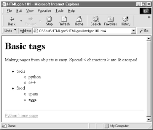
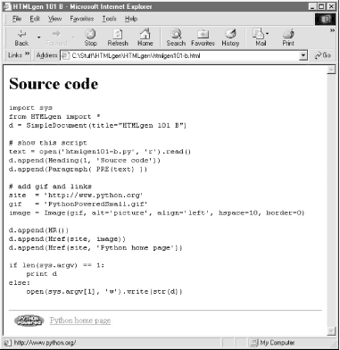

| I l@ve RuBoard |
|
15.3 HTMLgen: Web Pages from ObjectsOne of the things that makes CGI scripts complex is their inherent dependence on HTML: they must embed and generate legal HTML code to build user interfaces. These tasks might be easier if the syntax of HTML were somehow removed from CGI scripts and handled by an external tool. HTMLgen is a third-party Python tool designed to fill this need. With it, programs build web pages by constructing trees of Python objects that represent the desired page and "know" how to format themselves as HTML. Once constructed, the program asks the top of the Python object tree to generate HTML for itself, and out comes a complete, legally formatted HTML web page. Programs that use HTMLgen to generate pages need never deal with the syntax of HTML; instead, they can use the higher-level object model provided by HTMLgen and trust it to do the formatting step. HTMLgen may be used in any context where you need to generate HTML. It is especially suited for HTML generated periodically from static data, but can also be used for HTML creation in CGI scripts (though its use in the CGI context incurs some extra speed costs). For instance, HTMLgen would be ideal if you run a nightly job to generate web pages from database contents. HTMLgen can also be used to generate documents that don't live on the Web at all; the HTML code it produces works just as well when viewed offline. 15.3.1 A Brief HTMLgen TutorialWe can't investigate HTMLgen in depth here, but let's look at a few simple examples to sample the flavor of the system. HTMLgen is shipped as a collection of Python modules that must be installed on your machine; once it's installed, you simply import objects from the HTMLgen module corresponding to the tag you wish to generate, and make instances: C:\Stuff\HTMLgen\HTMLgen>python
>>> from HTMLgen import *
>>> p = Paragraph("Making pages from objects is easy\n")
>>> p
<HTMLgen.Paragraph instance at 7dbb00>
>>> print p
<P>Making pages from objects is easy
</P>
Here, we make a HTMLgen.Paragraph object (a class instance), passing in the text to be formatted. All HTMLgen objects implement __str__ methods and can emit legal HTML code for themselves. When we print the Paragraph object, it emits an HTML paragraph construct. HTMLgen objects also define append methods, which do the right thing for the object type; Paragraphs simply add appended text to the end of the text block: >>> p.append("Special < characters > are & escaped")
>>> print p
<P>Making pages from objects is easy
Special < characters > are & escaped</P>
Notice that HTMLgen escaped the special characters (e.g., < means <) so that they are legal HTML; you don't need to worry about writing either HTML or escape codes yourself. HTMLgen has one class for each HTML tag; here is the List object at work, creating an ordered list: >>> choices = ['python', 'tcl', 'perl'] >>> print List(choices) <UL> <LI>python <LI>tcl <LI>perl </UL> In general, HTMLgen is smart about interpreting data structures you pass to it. For instance, embedded sequences are automatically mapped to the HTML code for displaying nested lists: >>> choices = ['tools', ['python', 'c++'], 'food', ['spam', 'eggs']]
>>> l = List(choices)
>>> print l
<UL>
<LI>tools
<UL>
<LI>python
<LI>c++
</UL>
<LI>food
<UL>
<LI>spam
<LI>eggs
</UL>
</UL>
Hyperlinks are just as easy: simply make and print an Href object with the link target and text. (The text argument can be replaced by an image, as we'll see later in Example 15-3.) >>> h = Href('http://www.python.org', 'python')
>>> print h
<A HREF="http://www.python.org">python</A>
To generate HTML for complete pages, we create one of the HTML document objects, append its component objects, and print the document object. HTMLgen emits a complete page's code, ready to be viewed in a browser: >>> d = SimpleDocument(title='My doc')
>>> p = Paragraph('Web pages made easy')
>>> d.append(p)
>>> d.append(h)
>>> print d
<!DOCTYPE HTML PUBLIC "-//W3C//DTD HTML 3.2//EN">
<HTML>
<!-- This file generated using Python HTMLgen module. -->
<HEAD>
<META NAME="GENERATOR" CONTENT="HTMLgen 2.2.2">
<TITLE>My doc</TITLE>
</HEAD>
<BODY>
<P>Web pages made easy</P>
<A HREF="http://www.python.org">python</A>
</BODY> </HTML>
There are other kinds of document classes, including a SeriesDocument that implements a standard layout for pages in a series. SimpleDocument is simple indeed: it's essentially a container for other components, and generates the appropriate wrapper HTML code. HTMLgen also provides classes such as Table, Form , and so on, one for each kind of HTML construct. Naturally, you ordinarily use HTMLgen from within a script, so you can capture the generated HTML in a file or send it over an Internet connection in the context of a CGI application (remember, printed text goes to the browser in the CGI script environment). The script in Example 15-2 does roughly what we just did interactively, but saves the printed text in a file. Example 15-2. PP2E\Internet\Other\htmlgen101.pyimport sys
from HTMLgen import *
p = Paragraph('Making pages from objects is easy.\n')
p.append('Special < characters > are & escaped')
choices = ['tools', ['python', 'c++'], 'food', ['spam', 'eggs']]
l = List(choices)
s = SimpleDocument(title="HTMLgen 101")
s.append(Heading(1, 'Basic tags'))
s.append(p)
s.append(l)
s.append(HR( ))
s.append(Href('http://www.python.org', 'Python home page'))
if len(sys.argv) == 1:
print s # send html to sys.stdout or real file
else:
open(sys.argv[1], 'w').write(str(s))
This script also uses the HR object to format a horizontal line, and Heading to insert a header line. It either prints HTML to the standard output stream (if no arguments are listed) or writes HTML to an explicitly named file; the str built-in function invokes object __str__ methods just as print does. Run this script from the system command line to make a file, using one of the following: C:\...\PP2E\Internet\Other>python htmlgen101.py > htmlgen101.html C:\...\PP2E\Internet\Other>python htmlgen101.py htmlgen101.html Either way, the script's output is a legal HTML page file, which you can view in your favorite browser by typing the output filename in the address field or clicking on the file in your file explorer. Either way, it will look a lot like Figure 15-1. Figure 15-1. Viewing htmlgen101.py output in a browserSee file htmlgen101.html in the examples distribution if you wish to inspect the HTML generated to describe this page directly (it looks much like the prior document's output). Example 15-3 shows another script that does something less hardcoded: it constructs a web page to display its own source code. Example 15-3. PP2E\Internet\Other\htmlgen101-b.pyimport sys
from HTMLgen import *
d = SimpleDocument(title="HTMLgen 101 B")
# show this script
text = open('htmlgen101-b.py', 'r').read( )
d.append(Heading(1, 'Source code'))
d.append(Paragraph( PRE(text) ))
# add gif and links
site = 'http://www.python.org'
gif = 'PythonPoweredSmall.gif'
image = Image(gif, alt='picture', align='left', hspace=10, border=0)
d.append(HR( ))
d.append(Href(site, image))
d.append(Href(site, 'Python home page'))
if len(sys.argv) == 1:
print d
else:
open(sys.argv[1], 'w').write(str(d))
We use the PRE object here to specify preformatted text, and the Image object to generate code to display a GIF file on the generated page. Notice that HTML tag options such as alt and align are specified as keyword arguments when making HTMLgen objects. Running this script and pointing a browser at its output yields the page shown in Figure 15-2; the image at the bottom is also a hyperlink, because it was embedded inside an Href object. Figure 15-2. Viewing htmlgen101-b.py output in a browserAnd that (along with a few nice advanced features) is all there is to using HTMLgen. Once you become familiar with it, you can construct web pages by writing Python code, without ever needing to manually type HTML tags again. Of course, you still must write code with HTMLgen instead of using a drag-and-drop page layout tool, but that code is incredibly simple and supports the addition of more complex programming logic where needed to construct pages dynamically. In fact, now that you're familiar with HTMLgen, you'll see that many of the HTML files shown earlier in this book could have been simplified by recoding them to use HTMLgen instead of direct HTML code. The earlier CGI scripts could have used HTMLgen as well, albeit with additional speed overheads -- printing text directly is faster than generating it from object trees, though perhaps not significantly so (CGI scripts are generally bound to network speeds, not CPU speed). HTMLgen is open source software, but it is not a standard part of Python and must therefore be installed separately. You can find a copy of HTMLgen on this book's CD (see http://examples.oreilly.com/python2), but the Python web site should have its current location and version. Once installed, simply add the HTMLgen path to your PYTHONPATH variable setting to gain access to its modules. For more documentation about HTMLgen, see the package itself: its html subdirectory includes the HTMLgen manual in HTML format. |
| I l@ve RuBoard |
|